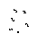
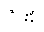
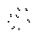
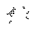
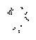
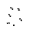
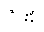
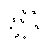
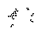
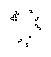
For all but the smallest values of k, the design process has traditionally been quite haphazard. Some kind of random experiment (or blind luck) yields a new pattern that shows promise of oscillating. A human designer then "stabilizes" it through the careful placement of additional objects, possibly including copies of itself. The simplest example of such an oscillator is the queen bee shuttle, a commonly occuring object that self-destructs in its natural form, but which can be stabilized between two blocks to form a period-30 oscillator (see oscspn2.lif). Some objects can also be "perturbed" by surrounding objects to reproduce themselves in a manner that they would not naturally. An example I recently found uses three eaters to rotate a pi heptomino 180 degrees in 44 turns. Three additional eaters rotate it back to the same position, giving us a period-88 oscillator.
One can realize new periods by combining known oscillators, but any such period is necessarily a multiple of its components' periods. Thus, infinitely many gaps remain, and each seems at first glance to require a distinct mechanism to fill. Given the rarity of such mechanisms and the ingenuity needed to stabilize them, the situation looks hopeless without some other ideas.
The first idea is to find a still life that can interact non-destructively with a glider to produce one or more gliders in another direction. This pattern, called a stable reflector, can be used to recirculate one or more gliders through a closed path. The time for a complete circuit is adjusted by changing the spacing of reflectors. It is possible in principle to construct new oscillators of any sufficiently high period by varying the position of reflectors and the spacing of gliders in the recirculating stream. Note that if we use higher-period reflectors (such as the period-30 reflector used in Dean Hickerson's block pusher) we can realize only multiples of that period.
The second idea is more complicated. Certain small active objects, notably the b-heptomino, produce copies of themselves at different orientations and positions. These copies are rapidly consumed by chaos, but if the object can be "tamed" by an assembly of still lifes to produce a clean copy of itself, then it can be sent along "tracks" composed of such assemblies. If enough different assemblies are found to shift, rotate, or flip the object, then many different closed tracks can be constructed to bring the object back to its original position and orientation. Moreover, the time to complete a circuit is the sum of the time through each component. Given at least two components with relatively prime timing and enough additional flexibility, one can construct closed tracks to realize any sufficiently high total circuit time. By placing n objects in a track whose time is a multiple of n, it is also possible to realize even lower periods. The lower limit is determined by some minimum required lag time between objects. Tracks have been built out of objects that are not still lifes, but these can only realize a restricted set of periods (see track.lif).
Shown above is the fastest known stable reflector. It is an optimized version of the first one ever constructed, which used essentially the same mechanism. Several of the components in this construction will also be discussed in the next section on David Buckingham's Herschel tracks.
The atomic components (blocks, eaters, etc.) group naturally into stages, as follows:
Stage 0: (Paul Callahan)
In the initial stage, a glider collides with a block to produce a pi heptomino. This explosive collision is "perturbed" by the permanent parts of the reflector so that at generation 170, the destroyed block is restored, a glider is released in the reverse direction, an r-pentomino is produced some distance from the still lifes, and a beehive is left in an awkward position close to the block. In other words, the first stage is a still life that realizes the following conversion:
glider --> glider + r-pentomino + beehive
Note that nothing is said about the destroyed block. Since it has been restored in precisely the same place, we can think of it as a permanent part of the assembly. This is the trick that gives us the "space" we need to work with. You can't do much with one glider, but you can do a lot with a big explosion, and that includes finding a way to rebuild the initial "explosive charge."
Stage 1: (David Buckingham)
The next stage converts the r-pentomino to a pattern called the Herschel, a 7-cell pattern produced by the b-heptomino along with a block, after 20 generations. This is an active pattern that sends off gliders and comes close to reproducing itself before destroying itself in debris.
Thus the conversion after this stage (generation 257) is:
glider --> glider + Herschel + beehive
Buckingham very recently found ways to "shepherd" a Herschel through eight different still life stages, implementing turns, reflections, and translations of this pattern. This is exactly the "track" idea mentioned above. See the next section for details. Most of these stages produce gliders as a side effect. With enough stages, we can route the Herschel to a position and orientation such that it will emit a glider on a path to delete the beehive. There are infinitely many ways to accomplish this, but the fastest is the most desirable: the faster we can delete the beehive, the sooner we can reuse the reflector. Dean Hickerson found the sequence of stages presented here (the fastest known) and also designed a special-purpose final stage.
Stages 2-6 (David Buckingham):
These stages route the Herschel to the required diagonal. We need only two of Buckingham's eight components. One flips and translates the Herschel in 77 moves; the other turns it 90 degrees and translates it in 64 turns. Gliders are produced in the process, some of which must be eaten to avoid a fatal collision. The one non-standard still life in the construction was designed by Dean Hickerson, and is simply a way of placing two eater heads where separate eaters would not fit.
After these stages, we have (generation 257 + 77 + 64 + 64 + 77 + 77 = 616):
glider --> 4 gliders + (moved) Herschel + beehive
Stage 7 (Dean Hickerson):
This stage converts the final Herschel into 2 gliders. At stage 685, a glider is sent off along a path to destroy the beehive. Finally, by stage 716, we have two gliders in place of the Herschel. Or:
glider --> 6 gliders + beehive.
At generation 751, one of the gliders destroys the beehive. Thus, we have the clean conversion:
glider --> 5 gliders.
One result of this glider excess is that we can produce several kinds of glider guns by bouncing gliders between reflectors. It sounds a little like one of those designs that pop up sometimes for perpetual motion machines. But there is no "Law of Conservation of Gliders" so it actually works! The simplest example is:
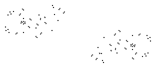
Herschel tracks
The current stable reflector wouldn't work at all if it weren't for
the new Herschel tracks found by David Buckingham. These
are used above
to move the Herschel
to the place we wanted it. If instead we were to
build a track that brings the Herschel back to where it
started, it would follow the track forever, giving us
an oscillator whose period depends on the time around the
track. In fact, we really get a glider gun most of the
time. We have to go out of our way to suppress the excess gliders.
There are 8 different track components, providing a great deal of freedom for placement and timing of the Herschel. Track segments that rotate the Herschel can be duplicated symmetrically to form a closed track on which it recirculates. There are also some asymmetric tracks, several of which are presented below.
Buckingham's Herschel components and corresponding delays are as follows: a left turn (64), a flip (77), a right turn (112), a translation (117), a flip (119), a right turn (156), a flip (158), and a left turn (190). The best way to understand these components is to observe them in action. Here are the patterns themselves, listed in the same order:
Buckingham used his components to construct a period-61 oscillator as well as true (not pseudo) glider guns of period 62 through 69. Note that guns are usually considered more interesting than oscillators, since their conversion to oscillators is straightforward.
The time around a closed Herschel track is longer than the smallest periods we are interested in. We must obtain these periods by placing multiple Herschels on the same track. Buckingham's period-67 gun illustrates this technique elegantly.
All higher gun periods can be realized using similar techniques. Realizable periods are, however, bounded below by the minimum time between adjacent Herschels on the track. Buckingham was able to reduce this minimum to 61, but only by suppressing all excess gliders:

Symmetry is evident in the last two patterns. This is due to the standard technique of forming a closed track out of rotated copies of an open track. A closed Herschel track need not be symmetric, however, and an asymmetric track is clearly required if one wishes to build an odd-period gun using just one Herschel. Closed tracks consisting of just a few stages can be enumerated readily using depth first search. I used such a search to find the following Herschel-based guns.
A period-945 gun, which I believe to be the minimum odd period that can be realized using a single Herschel:
A period-969 gun, which uses a complicated track consisting of 11 components:
A period-1246 gun that demonstrates all of Buckingham's components in the same pattern:
 Back to Paul's Page of Conway's Life Miscellany
Back to Paul's Page of Conway's Life Miscellany